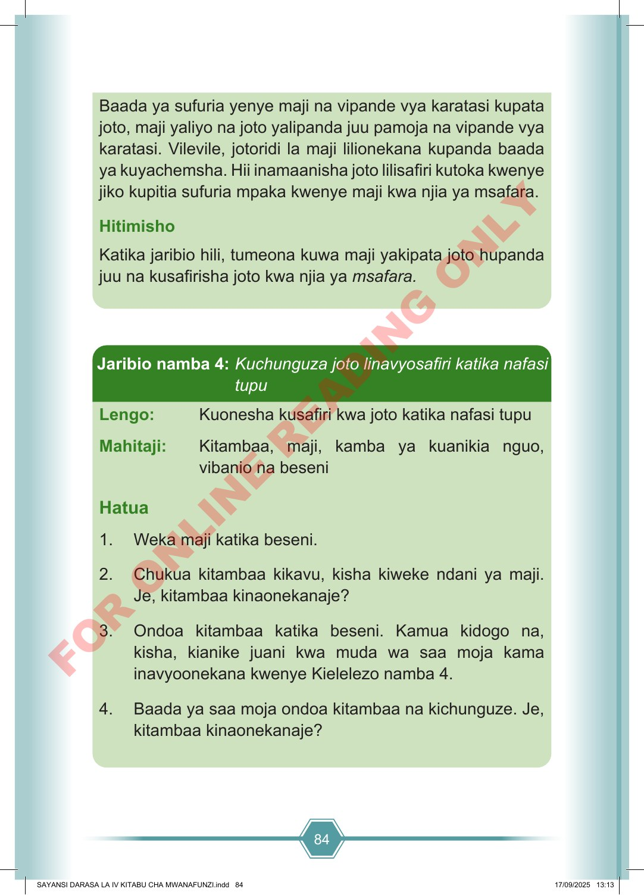

84 Baada ya sufuria yenye maji na vipande vya karatasi kupata joto, maji yaliyo na joto yalipanda juu pamoja na vipande vya karatasi. Vilevile, jotoridi la maji lilionekana kupanda baada ya kuyachemsha. Hii inamaanisha joto lilisafiri kutoka kwenye jiko kupitia sufuria mpaka kwenye maji kwa njia ya msafara. Hitimisho Katika jaribio hili, tumeona kuwa maji yakipata joto hupanda juu na kusafirisha joto kwa njia ya msafara. Lengo: Kuonesha kusafiri kwa joto katika nafasi tupu Mahitaji: Kitambaa, maji, kamba ya kuanikia nguo, vibanio na beseni Hatua 1. Weka maji katika beseni. 2. Chukua kitambaa kikavu, kisha kiweke ndani ya maji. Je, kitambaa kinaonekanaje? 3. Ondoa kitambaa katika beseni. Kamua kidogo na, kisha, kianike juani kwa muda wa saa moja kama inavyoonekana kwenye Kielelezo namba 4. 4. Baada ya saa moja ondoa kitambaa na kichunguze. Je, kitambaa kinaonekanaje? Jaribio namba 4: Kuchunguza joto linavyosafiri katika nafasi tupu SAYANSI DARASA LA IV KITABU CHA MWANAFUNZI.indd 84 SAYANSI DARASA LA IV KITABU CHA MWANAFUNZI.indd 84 17/09/2025 13:13 17/09/2025 13:13 F O R O N L I N E R E A D I N G O N L Y